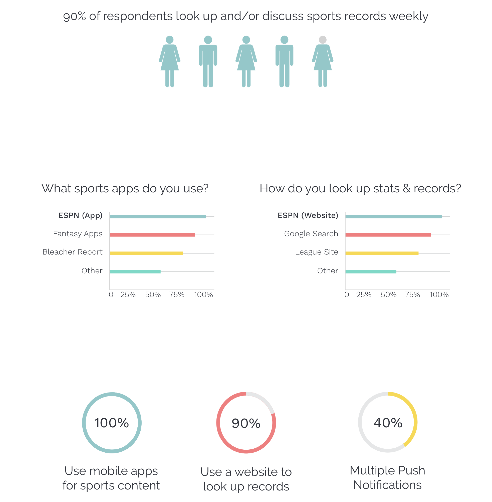

Mobile App | Concept Project | 4 Weeks
Unbreakable is a mobile app for data-driven sports reporting and chatbot based queries. Users can discover unique data-visualization cards, track record breaking moments in sports, and browse the trending news feed - all while tracking their favorite teams.
A Problem to Solve
Clearly, people like data-driven sports reporting. There’s been an influx of interactive infographics across major platforms, deeper box score tracking, predictive analytics, and the rise of stat-based sports products like fantasy sports. Through research and validation, I discovered that it’s apparent that even though most mainstream sports fans enjoy this data-driven positioning in sports, there aren’t many products that allow users to pull this type of content on their own.
A Peek at the Solution
Throughout the entire project, I relied on a process-heavy approach. By consistently researching testing and iterating, I was able to hone in on a tight MVP that solves a specific problem for mobile sports users. Check out a few of the unique features below:
Ask me anything chatbot
Using chatbot interaction, users can ask about any sports records, trends, or stats. The friendly responses include everything from text-based answers to beautiful visualizations.
Not sure what to ask? Our chatbot can help users explore interesting data-driven stories.


Stay on top of record breaking moments
Always know what's happeneing (or about to happen) in the world of sports records
Expand any records cards to see visualizations and news we're always tracking towards. You can even filter to just track your favorite teams.
Data cards visualize sports news like nothing else
Inspired by beautiful infographics, we find unique visual ways to reports the most impressive trending stories in sports
Results from your chatbot queries will often yield the interactive data cards as well.

How did I get here?
Discovery & Strategy Phase
It Needs a Name
First, I needed a name. Using multiple naming exercises and formats, I cycled through possible types of names (descriptive, literal, metaphoric, etc.) and landed on “Unbreakable.”
Unbreakable is a tongue-in-cheek reference to the notion that there are very few records in sports that are truly unbreakable. As incredible as they seem at the time, an athlete always ends up coming along that breaks the greatest records in the world.
Initial Concept
As with any early stage idea, I do a lot a lot of thinking, writing, and sketching immediately. Some of the earliest sketches included a sports trivia section and a simple lookup tool. After early iterations, I made some assumptions and began research in order to validate my claims.
I would soon discover all the challenges associated with chatbot interactions and complex data visualization.
User Research
To kick off my research, I surveyed many different types of digital sports product users. From casual and mainstream fans all the way to sports data power users, I wanted to find out about the following user habits and opinions in the following areas:- Where do you discuss sports?
- What leagues are most important?
- Sports trivia, games, and entertainment value
- Current sports apps and user habbits
- Interest infographics and data-driven stories
- Interaction with stats, records, lists, etc.
Relevant Stats
Relevant Statistics (ideally displayed using infographics): 80% of respondents discuss sports related topics daily NFL, NBA, NHL, and MLB are the most popular leagues 90% of respondents like sports trivia sometimes 90% of respondents have at least 2 sports apps on their phone Only 50% receive multiple notifications 100% of users look at sports content on their mobile devices ESPN, Bleacher Report, and Fantasy apps were the most popular 90% of users receive push notifications from their sports apps, with 50% receiving multiple apps notifications Users like: ability to customize based on favorite teams, see trending information, news & scores, and push notifications Users don’t like: irrelevant updates and info, too many features to navigate, no statistical insights/depth in news updates, no app can do everything they want 50% of users look up sports records or statistics daily, 90% weekly; in all settings (alone, with friends, family, coworkers) ESPN, google search, wikipedia, and league-specific sites for looking up records and stats Users don’t like that it takes too long to find the data through google searches (too many clicks and hard to find the right info, especially is the stat is obscure or hard to describe) Most users are interested in being notified on record-based sports events (approaching, completed) Respondent demo: 25-34, urban, technical & business professions (engineers, analysts, consultants), bachelor’s level of education
Synthesis
This app cannot be a chatbot/records feature - it must be a full sports app that does everything including tracking favorite teams, scores/schedules, and all trending sports news Users enjoy sports data and entertainment like data-driven reporting, records tracking/trending, and sports trivia Everyone is using their phones for sports but they use sources like google searches, wiki, and league sites to look up records and stats (no apps for infographics, records tracking, or stat query) No good tools and it takes too long. Content they like re: sports data is pushed to them on tv or in social posts, but they cannot pull info or customize type BR and ESPN main competitors
User Personas
After receiving and analysing the survey results, I decided to follow up with some respondents who look up statistics and sports records, as well as more mainstream sports users looking to get more out of their current apps. By creating a few personas, I was able to bring more empathy to the early phases and throughout the entire project.
Daniel P: Data Fanatic Scott S: Sports Bro Lindsey R: Trendsetter
Competetive Analysis
While diving deeper with key users, I discovered some competitors my potential users were currently engaging with on a regular basis. I complemented my user research and interviews with some deeper research on these existing products. I focused on ESPN, Bleacher Report, Wikipedia, Google Searches, League-Specific Sites
Revised MVP Feature Set
After I was able to understand the market and its users, I was able to confidently establish a concise list of MVP features that would solve a specific problem for users who like data-driven comprehensive sports content
Cards View Recent Cards (from chatbot interactions/queries) Trending Cards (pushed content) Records View On Pace Recently Broken Ability to filter Chatbot Tool / Thread Running thread for user query specific sports data and explore sports News Feed / Aggregator Ability to filter Includes social media posts, news articles, and records on pace cards Scores Ability to filter Split between favs, in progress, and upcoming Specific matchup view
Signature items: data cards/visualizations, records cards, ability to expand data/records cards for more info Signature tool: chatbot based queries and interactions
Information Architecture Phase
User Stories & Flows
Using Google Sheets and draw.io, I created both user stories and user flows based on my research & motivation to satisfy my MVP requirements. For new users, onboarding and tool tips are especially crucial for understanding data cards, chatbot interactions, adding favorites, and general navigation. For existing users, interacting with the data cards, records tracking, chatbot, news feed, and scores are all critical for the MVP. Additionally, by prioritizing my user stories, I was able to reduce the potential “feature bloat” for the first version of Unbreakable - this is how I ended up at the MVP list in the section above.
[insert draw.io diagrams and user stories graphics here] [insert site map]
Wireframes
It was important to use an iterative process for wireframing stages. I used Balsamiq for medium-fi wireframing. During the wireframing process, the main focus was to visualize and test the user flows. After some initial testing, I determined that the segmentation of sections via a sticky tab bar at the bottom of the interface provided the best navigation strategy for users.
[insert Balsamiq graphics here] During the process, I incorporated a few rounds of real user testing with a script. Valuable feedback that was incorporated at this phase included: Confusion between search and chatbot interactions yielded changes to the site map, including the chatbot dedicated tab which all user requests and queries run through Visual and functional consistency between interaction of data items, like results/related/trending cards, matchups, and record cards To help users understand the apps functionality and navigation, I added more interactive content to the onboarding and sign up artboards Revised User Flows and Site Map Revised Wireframes
Visual Design Phase
Branding and Style
Starting with pencil and pad, I iterated on many ideas for Unbreakable. It began with the “Unbreakable” text with distress markings streaking throughout the letters. In an attempt to become more abstract but push the concept that all records are meant to be broken, I landed on a single slash between “Un” and ‘Breakable” with a color change between the prefix and the word. In grayscale and at smaller sizes, the white “Breakable” text is much more dominant and visible, adding to the notion and tone of the product. Pulling away from the literal and into the abstract allows the brand to speak for itself without losing the brand’s density. [insert Unbreakable logos on black/red] When building the visual style for Unbreakable, I wanted to convey a playfulness but also maintain a clean design. The sea-green and bright red colors allow for a less serious and fun tone, while the typefaces (Montserrat for headers and Work Sans for body) are robust. The sans-serif typefaces with high x-heights are particularly important, because for a mobile app with densely packed information, legibility and readability are the highest priority. Additionally, in an effort to not sacrifice all character in the name of readability, Montserrat for headers has an additional quirkiness where the content has flexibility and life. Work sans also increases the size of certain parts of the type anatomy for optimal use for screens at small sizes. [insert style tile graphic here & moodboard collage]
Hi-Fi Mockups
mocked up my artboards using Sketch: [insert mockup artboards here]
---Revisions with color system usage --- records artboard markup as example (background less cool, records line for info chunking, segment bar from green to grey to not distract
Prototyping Phase
Interactions
I created my prototype in Flinto. You can download it here (using the free Flinto app, you can view on your mobile device for full context). Using Flinto, I was not only able to create unique transitions between screens and views, but able to provide the needed interaction design to the signature items and features of the app: data cards (flipping and expanding), chatbot thread messaging, and onboarding animation to name a few.
[insert set of gifs for flinto animations and interactions here]
Additional User Testing
After a few sets of user tests I was able to revise a couple key sections: Color System and Visual Design Creating a sub-system for the visual system and colors to exclusively appear in the records and data cards increased consistency across the entire app. Users can define when they’re looking at a data-item (data cards in cards tab, data items in chatbot tab, and records cards) Additionally, chunking information is extremely important, especially in the expanded data card view (where a lot of info is packed in closely together). By using lighter and unique lines to separate sections and adding more breathing room to the sections, users can focus on large quantities of chunked information without feeling overwhelmed. Interaction design: Improving the chatbot experience became apparent when, during testing, users weren’t sure how to have a conversation with the chatbot (when to answer, ask questions, possible results) This was less to do with the content of the thread and more of the prototypes job to guide users through a sample interaction with the chatbot. By allowing more tips and tutorial-style responses, as well as the ability to review the entire thread (after the initial conversation), allowed users to review chatbot history and understand the different types of chatbot related events can occur in a full version (questions, related, explore,etc)
Reflections
Key Learnings
Creating and revising Unbreakable from concept to prototype was an intense and rewarding experience. While I consider myself a better designer in many areas after this project, here is a short list of my most significant reflections: Iterative branding process. Don’t be so quick to jump from paper to screen. If the branding system isn’t finished, keep sketching. Take the space to tell the user about your products. Onboarding screens and tutorials can often go overlooked when creating the product itself; however, user testing proved that your customer won’t revisit your app unless they know exactly what they’re signing up for. Expanding the video clips in the onboarding section and adding more tutorial content to the chatbot thread during the wireframing and visual design phases proved to be fruitful when evaluating conversion rates. MVP - don’t overlook necessary features that aren’t unique to your app. Understanding through research that user’s aren’t likely to use another sports app unless it include updates on their favorite teams, a news feed, and scores & schedules was imperative to discover early in the discovery phase. Do you have a product or really just a feature? Initial concepts only included a chatbot for records and data cards; however, they did not include favorites tracking, scores, and general sports news (non-data-driven). An app without those features (although simpler) would not have made it into mainstream sports users daily active rotation of apps. Consistency, consistency, consistency. Making sure every type of item’s design and interaction is consistent across the entire app.
Final Design
Solution
Onboarding
---insert interaction examples and artboars for onboarding, sign up, cards, records, chatbot, feed, and scores
Discover Chatbot
---insert interaction examples and artboars for onboarding, sign up, cards, records, chatbot, feed, and scores
Tracking Records
---insert interaction examples and artboars for onboarding, sign up, cards, records, chatbot, feed, and scores
News Feed
---insert interaction examples and artboars for onboarding, sign up, cards, records, chatbot, feed, and scores
Scores
---insert interaction examples and artboars for onboarding, sign up, cards, records, chatbot, feed, and scores